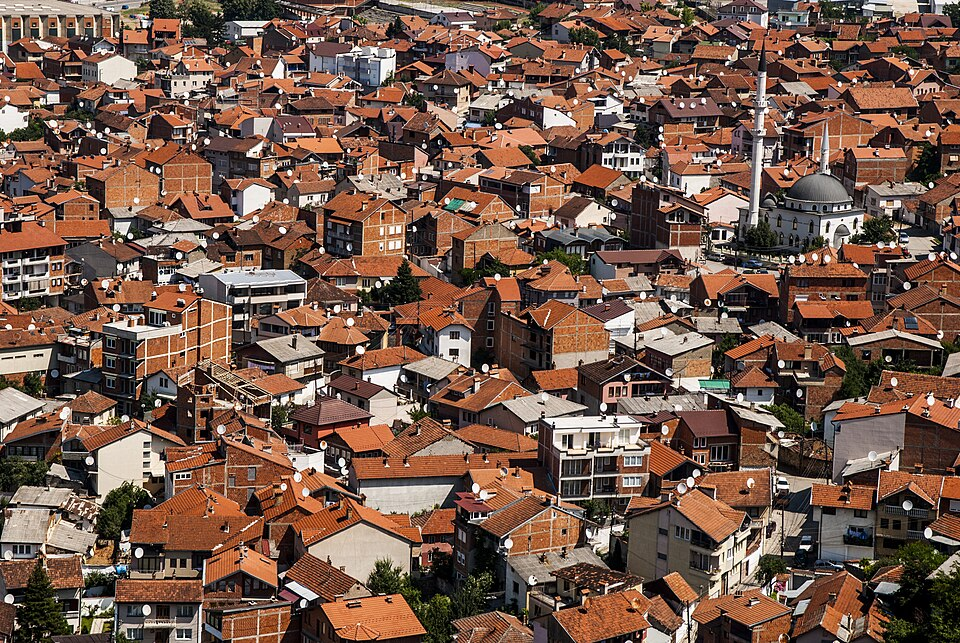
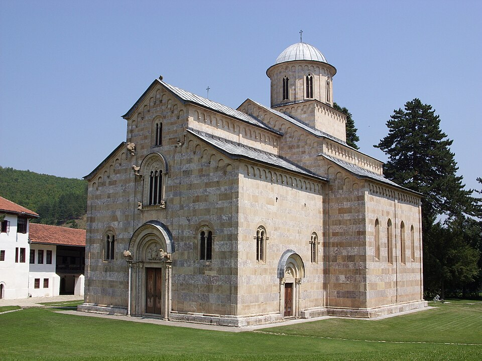
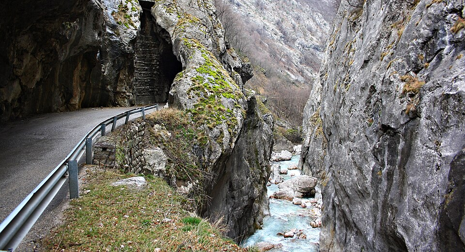
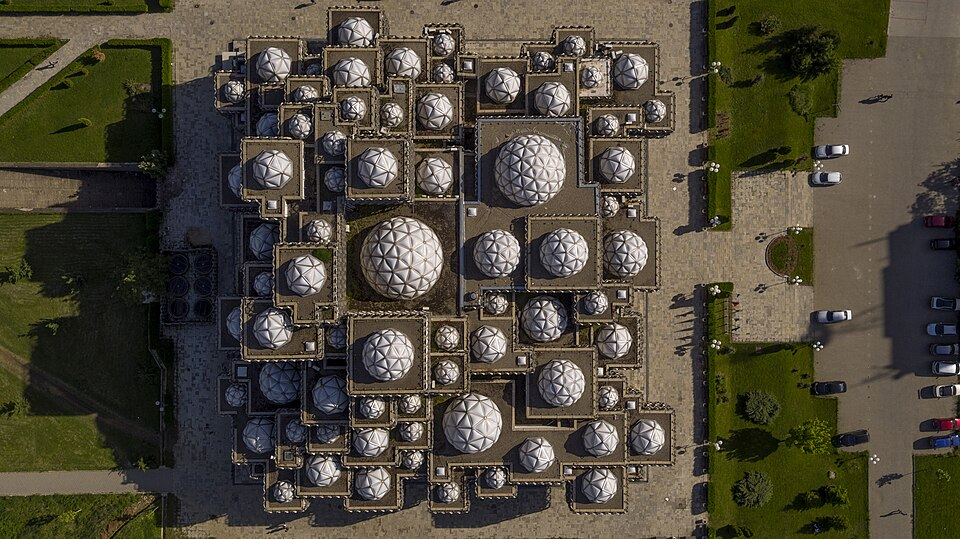

Kosovo코소보 Kosova / Косово
오스만기 도시유산과 중세 수도원, 젊은 인구의 나라
- Capital
- 프리슈티나 (Prishtinë)
- Language
- 알바니아어·세르비아어
- Currency
- 유로 (EUR)

프리즈렌 구시가지Prizren
비소키 데차니 수도원Visoki Dečani Monastery
루고바 협곡Rugova Canyon
프리슈티나 국립도서관National Library of Kosovo, PrishtinaExplore Kosovo
코소보 더 알아보기
프리즈렌의 오스만기 구시가지, 프리슈티나의 현대 공공건축, 루고바 협곡·샤르산맥의 자연이 공존한다. 알바니아계가 다수를 이루며, 세르비아계와 여러 소수 공동체의 문화유산도 함께 있다. 경제는 ICT 서비스, 송금·소비, 에너지·광물, 농식품·경공업 등이 주요 소재이며 젊은 인구구조와 수입 의존을 동시에 볼 필요가 있다.

Latest updates
코소보 최근 뉴스
-
코소보 특별재판소, 타치 전 대통령에 사법방해 징역 17개월 선고
유럽웨스턴발칸에 따르면 헤이그 코소보 특별재판소는 17일 하심 타치에게 사법방해 등 혐의로 징역 17개월을 선고했습니다. 이미 전쟁범죄 본안에서 25년형을 복역 중이며, 이 형은 본안 판결이 항소심에서 유지된 뒤에 집행됩니다.
-
코소보, 헤이그 특별재판소 권한 축소 법 개정 추진…EU·영국 우려, 불가리아는 S&P 전망 안정적 상향
발칸인사이트에 따르면 EU와 영국은 코소보 의원들에게 헤이그 특별재판소 권한을 줄이는 개정법을 국제 파트너와 협의 없이 통과시키지 말라고 경고했습니다.
-
몬테네그로, EU 협상 2개 챕터 추가 잠정 종결(23/33)…해외 전쟁 참전 시민 14명 집계
유럽서발칸(EWB)에 따르면 몬테네그로는 11월 6일 브뤼셀 정부간 회의에서 상품 이동 및 식품안전·수의·식물위생 챕터 2개를 잠정 종결해 33개 중 23개를 닫았고 10개가 남았습니다. 스파이치 총리는 연내 추가 회의를 기대하며 크로아티아와 양자 현안에서 타협할 준비가 돼 있다고 밝혔습니다.